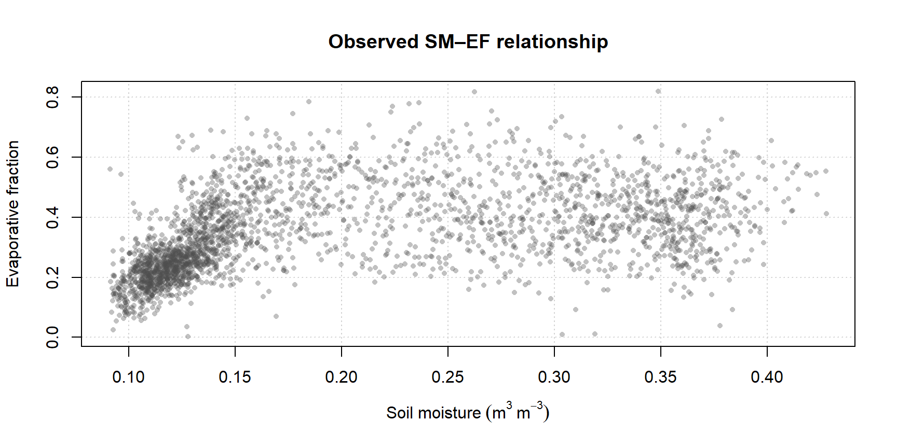
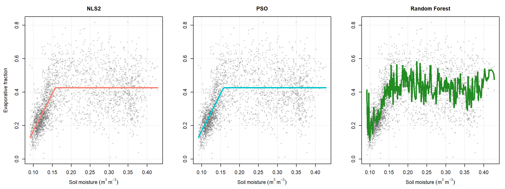
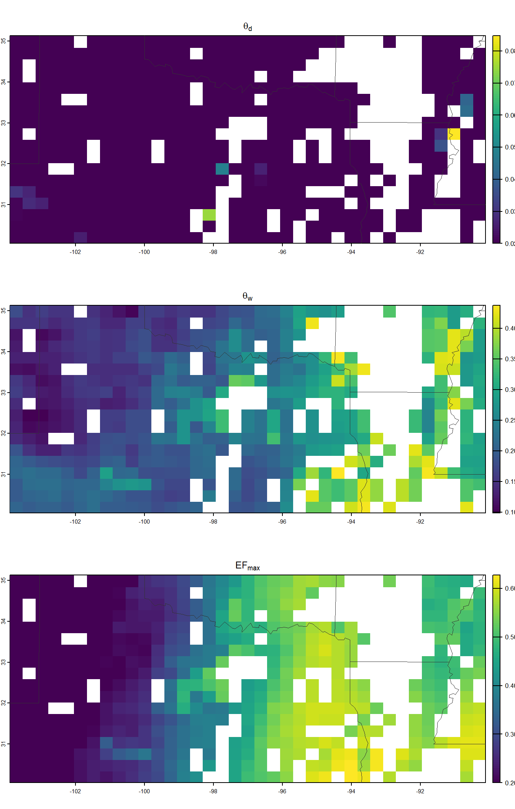
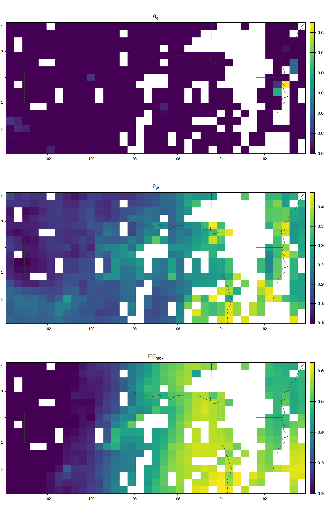

install.packages(c("readr", "nls2", "pso", "randomForest", "terra", "spData"))What we will explore
We will learn how to fit and optimize a physics-based nonlinear response curve in R using NLS2/NLS and Particle Swarm Optimization (PSO). We will compare those fitted curves with a Random Forest model that learns the relationship directly from the data. Finally, we will turn the optimization steps into reusable functions and apply them to spatial soil-moisture (SM) and evaporative-fraction (EF) data.
Let’s follow one clear workflow:
observations → physical equation → parameter bounds → optimization → fitted curve → reusable function → parameter maps
The bigger picture
The SM–EF relationship is our case study. The same R workflow can be adapted to other environmental models when you have an equation, unknown parameters, and observations for fitting.
The physical question
Evaporative fraction (EF) describes the fraction of available surface energy used for evapotranspiration. We will model how EF changes as soil moisture (SM) decreases during periods without strong wetting. These periods are called soil-moisture drydowns.
We will represent three soil-moisture regimes:
- a dry regime, where water strongly limits EF;
- a transition regime, where EF increases with SM; and
- a wet regime, where EF reaches a plateau.
Setup
Install the packages once if needed.
Load the packages used in this chapter.
library(readr)
library(nls2)Warning: package 'nls2' was built under R version 4.3.2Loading required package: protoWarning: package 'proto' was built under R version 4.3.2library(pso)
library(randomForest)Warning: package 'randomForest' was built under R version 4.3.3randomForest 4.7-1.2Type rfNews() to see new features/changes/bug fixes.Set a few analysis choices in one place.
min_drydown_steps <- 5
analysis_seed <- 100Download and read the simplified data
The course dataset already contains only the three variables we need:
date: observation date;SM: vertically averaged soil moisture in volumetric units; andEF: evaporative fraction.
csv_url <- paste0(
"https://github.com/Vinit-Sehgal/AGRO4092/raw/refs/heads/main/",
"SampleData-master/US-TON_SM-EF.csv"
)
download.file(
csv_url,
destfile = "US-TON_SM-EF.csv",
mode = "wb"
)eddy_data <- read_csv(
"US-TON_SM-EF.csv",
show_col_types = FALSE
)
eddy_data$date <- as.Date(eddy_data$date)
eddy_data <- eddy_data[order(eddy_data$date), ]
head(eddy_data)# A tibble: 6 × 3
date SM EF
<date> <dbl> <dbl>
1 0001-01-20 0.335 0.458
2 0001-01-20 0.381 0.399
3 0001-01-20 0.402 0.280
4 0001-01-20 0.410 0.483
5 0001-01-20 0.397 0.346
6 0001-01-20 0.257 0.242
Start with analysis-ready data
The purpose of this chapter is to learn curve fitting and optimization. The soil-depth averaging and other preprocessing have therefore already been completed.
Identify simple drydown periods
Calculate the change in SM from one observation to the next.
eddy_data$SM_change <- c(NA_real_, diff(eddy_data$SM))A non-increasing step has SM_change <= 0.
eddy_data$is_drydown <-
is.finite(eddy_data$SM_change) & eddy_data$SM_change <= 0Create an event number and count the drying steps in each event.
eddy_data$drydown_id <- cumsum(!eddy_data$is_drydown)
eddy_data$drydown_length <- ave(
eddy_data$is_drydown,
eddy_data$drydown_id,
FUN = sum
)Keep complete SM–EF observations from events with at least five drying steps.
drydown_data <- subset(
eddy_data,
is_drydown &
drydown_length >= min_drydown_steps &
is.finite(SM) &
is.finite(EF)
)
cat("Retained observations:", nrow(drydown_data), "\n")Retained observations: 2682 cat(
"Retained drydown events:",
length(unique(drydown_data$drydown_id)),
"\n"
)Retained drydown events: 245
We are counting observations
Five observations represent approximately five days only when the records are daily and consecutive. For data with a different time step, change min_drydown_steps accordingly.
Let’s view the observations that will be fitted.
plot(
drydown_data$SM,
drydown_data$EF,
pch = 16,
cex = 0.7,
col = adjustcolor("grey30", alpha.f = 0.35),
panel.first = graphics::grid(),
xlab = expression("Soil moisture"~(m^3~m^{-3})),
ylab = "Evaporative fraction",
main = "Observed SM–EF relationship"
)
Define the physics-based response curve
We will use the following piecewise-linear model:
\[ EF(SM)= \begin{cases} 0, & SM \leq \theta_d \\ EF_{max}\dfrac{SM-\theta_d}{\theta_w-\theta_d}, & \theta_d < SM < \theta_w \\ EF_{max}, & SM \geq \theta_w. \end{cases} \]
The three parameters are:
- \(\theta_d\): dry threshold;
- \(\theta_w\): wet threshold; and
- \(EF_{max}\): EF at the wet plateau.
Translate the equation into an R function.
piecewise_EF <- function(SM, theta_d, theta_w, EF_max) {
ifelse(
SM <= theta_d,
0,
ifelse(
SM >= theta_w,
EF_max,
EF_max * (SM - theta_d) / (theta_w - theta_d)
)
)
}Set the optimization bounds
An optimizer searches only inside the parameter space that we allow. We will use the revised bounds below.
lower_bounds <- c(
theta_d = 0.02,
theta_w = unname(quantile(drydown_data$SM, 0.35)),
EF_max = 0.20
)
upper_bounds <- c(
theta_d = unname(quantile(drydown_data$SM, 0.30)),
theta_w = unname(quantile(drydown_data$SM, 0.98)),
EF_max = 1.00
)
lower_bounds theta_d theta_w EF_max
0.0200000 0.1323111 0.2000000 upper_bounds theta_d theta_w EF_max
0.1272590 0.3855175 1.0000000 Check that every lower bound is smaller than its upper bound.
stopifnot(all(lower_bounds < upper_bounds))
Bounds are part of the model
The dry threshold is searched in the lower part of the observed SM distribution, while the wet threshold is searched in the upper part. This encourages \(\theta_d < \theta_w\) and avoids implausible combinations. If many fitted values reach a bound, inspect the data and reconsider the bound rather than accepting the result automatically.
Fit the model with NLS2 and NLS
NLS needs useful starting values. We will let NLS2 search a small grid first and then use bounded NLS to refine the best grid result.
Build a starting-value grid
nls_search <- expand.grid(
theta_d = seq(
lower_bounds["theta_d"],
upper_bounds["theta_d"],
length.out = 6
),
theta_w = seq(
lower_bounds["theta_w"],
upper_bounds["theta_w"],
length.out = 6
),
EF_max = seq(
lower_bounds["EF_max"],
upper_bounds["EF_max"],
length.out = 6
)
)
head(nls_search) theta_d theta_w EF_max
1 0.02000000 0.1323111 0.2
2 0.04145181 0.1323111 0.2
3 0.06290361 0.1323111 0.2
4 0.08435542 0.1323111 0.2
5 0.10580722 0.1323111 0.2
6 0.12725903 0.1323111 0.2Search the grid with NLS2
nls_start <- nls2(
EF ~ piecewise_EF(SM, theta_d, theta_w, EF_max),
data = drydown_data,
start = nls_search,
algorithm = "brute-force"
)
coef(nls_start) theta_d theta_w EF_max
0.08435542 0.13231111 0.36000000 Refine the solution with bounded NLS
nls_fit <- nls(
EF ~ piecewise_EF(SM, theta_d, theta_w, EF_max),
data = drydown_data,
start = as.list(coef(nls_start)),
algorithm = "port",
lower = lower_bounds,
upper = upper_bounds,
control = nls.control(maxiter = 200, warnOnly = TRUE)
)
nls_parameters <- coef(nls_fit)
nls_parameters theta_d theta_w EF_max
0.06191859 0.15774229 0.42603887
Two steps, one fitted model
NLS2 supplies promising starting values. NLS then moves away from the grid points to refine the parameter estimates. Both steps fit the same physical equation.
Fit the same model with PSO
Particle Swarm Optimization searches with a group of candidate solutions called particles. Each particle moves through the bounded parameter space as the swarm searches for a smaller model error.
Define the objective function
The objective function returns mean squared error. PSO will try to make this value as small as possible.
model_error <- function(parameters, SM, EF) {
predicted <- piecewise_EF(
SM,
theta_d = parameters[1],
theta_w = parameters[2],
EF_max = parameters[3]
)
mean((EF - predicted)^2, na.rm = TRUE)
}Run PSO
set.seed(analysis_seed)
pso_fit <- psoptim(
par = (lower_bounds + upper_bounds) / 2,
fn = model_error,
SM = drydown_data$SM,
EF = drydown_data$EF,
lower = lower_bounds,
upper = upper_bounds,
control = list(
s = 30,
maxit = 60,
trace = 1
)
)S=30, K=3, p=0.0967, w0=0.7213, w1=0.7213, c.p=1.193, c.g=1.193v.max=NA, d=0.8459, vectorize=FALSE, hybrid=offIt 10: fitness=0.01168It 20: fitness=0.01161It 30: fitness=0.01161It 40: fitness=0.0116It 50: fitness=0.0116It 60: fitness=0.0116Maximal number of iterations reachedpso_parameters <- setNames(
pso_fit$par,
c("theta_d", "theta_w", "EF_max")
)
pso_parameters theta_d theta_w EF_max
0.06190792 0.15777929 0.42608770
Same equation, different optimization
NLS2/NLS and PSO estimate the same three parameters in the same piecewise model. Differences in their fitted values come from the search algorithms, not from different physical equations.
Turn the optimizations into reusable functions
A reusable fitting function should accept two vectors and return one fixed-length parameter vector:
SM + EF \(\rightarrow\) theta_d + theta_w + EF_max
NLS2/NLS function
fit_NLS <- function(SM, EF) {
keep <- is.finite(SM) & is.finite(EF)
SM <- SM[keep]
EF <- EF[keep]
empty_result <- c(
theta_d = NA_real_,
theta_w = NA_real_,
EF_max = NA_real_
)
if (length(SM) < 10 || length(unique(SM)) < 4) {
return(empty_result)
}
lower <- c(
theta_d = 0.02,
theta_w = unname(quantile(SM, 0.35)),
EF_max = 0.20
)
upper <- c(
theta_d = unname(quantile(SM, 0.30)),
theta_w = unname(quantile(SM, 0.98)),
EF_max = 1.00
)
if (any(!is.finite(c(lower, upper))) || any(lower >= upper)) {
return(empty_result)
}
model_data <- data.frame(SM = SM, EF = EF)
search_grid <- expand.grid(
theta_d = seq(lower["theta_d"], upper["theta_d"], length.out = 6),
theta_w = seq(lower["theta_w"], upper["theta_w"], length.out = 6),
EF_max = seq(lower["EF_max"], upper["EF_max"], length.out = 6)
)
start_fit <- nls2(
EF ~ piecewise_EF(SM, theta_d, theta_w, EF_max),
data = model_data,
start = search_grid,
algorithm = "brute-force"
)
fit <- nls(
EF ~ piecewise_EF(SM, theta_d, theta_w, EF_max),
data = model_data,
start = as.list(coef(start_fit)),
algorithm = "port",
lower = lower,
upper = upper,
control = nls.control(maxiter = 200, warnOnly = TRUE)
)
parameters <- coef(fit)[c("theta_d", "theta_w", "EF_max")]
setNames(as.numeric(parameters), names(empty_result))
}PSO function
fit_PSO <- function(SM, EF) {
keep <- is.finite(SM) & is.finite(EF)
SM <- SM[keep]
EF <- EF[keep]
empty_result <- c(
theta_d = NA_real_,
theta_w = NA_real_,
EF_max = NA_real_
)
if (length(SM) < 10 || length(unique(SM)) < 4) {
return(empty_result)
}
lower <- c(
theta_d = 0.02,
theta_w = unname(quantile(SM, 0.35)),
EF_max = 0.20
)
upper <- c(
theta_d = unname(quantile(SM, 0.30)),
theta_w = unname(quantile(SM, 0.98)),
EF_max = 1.00
)
if (any(!is.finite(c(lower, upper))) || any(lower >= upper)) {
return(empty_result)
}
fit <- psoptim(
par = (lower + upper) / 2,
fn = model_error,
SM = SM,
EF = EF,
lower = lower,
upper = upper,
control = list(
s = 30,
maxit = 60,
trace = 0
)
)
setNames(as.numeric(fit$par), names(empty_result))
}Check both functions on the site data.
fit_NLS(drydown_data$SM, drydown_data$EF) theta_d theta_w EF_max
0.06191859 0.15774229 0.42603887 fit_PSO(drydown_data$SM, drydown_data$EF) theta_d theta_w EF_max
0.06192512 0.15776406 0.42611733 Compare with a Random Forest
A Random Forest learns the SM–EF relationship from many regression trees. It does not assume the three-regime equation and does not directly estimate \(\theta_d\), \(\theta_w\), or \(EF_{max}\). For this reason, it is a useful black-box prediction benchmark, but it is less physically interpretable.
set.seed(analysis_seed)
rf_fit <- randomForest(
EF ~ SM,
data = drydown_data,
ntree = 500,
mtry = 1,
nodesize = 10
)
rf_fit
Call:
randomForest(formula = EF ~ SM, data = drydown_data, ntree = 500, mtry = 1, nodesize = 10)
Type of random forest: regression
Number of trees: 500
No. of variables tried at each split: 1
Mean of squared residuals: 0.01411422
% Var explained: 28.71Create one SM sequence and predict all three fitted responses.
sm_grid <- seq(
min(drydown_data$SM, na.rm = TRUE),
max(drydown_data$SM, na.rm = TRUE),
length.out = 200
)
nls_curve <- piecewise_EF(
sm_grid,
nls_parameters["theta_d"],
nls_parameters["theta_w"],
nls_parameters["EF_max"]
)
pso_curve <- piecewise_EF(
sm_grid,
pso_parameters["theta_d"],
pso_parameters["theta_w"],
pso_parameters["EF_max"]
)
rf_curve <- predict(
rf_fit,
newdata = data.frame(SM = sm_grid)
)Plot the methods side by side.
curve_list <- list(
NLS2 = nls_curve,
PSO = pso_curve,
`Random Forest` = rf_curve
)
curve_colors <- c("salmon", "turquoise3", "forestgreen")
old_par <- par(mfrow = c(1, 3), mar = c(4.5, 4.5, 3, 1))
for (i in seq_along(curve_list)) {
plot(
drydown_data$SM,
drydown_data$EF,
pch = 16,
cex = 0.65,
cex.axis = 1.1,
cex.lab = 1.1,
col = adjustcolor("grey30", alpha.f = 0.25),
panel.first = graphics::grid(),
xlab = expression("Soil moisture"~(m^3~m^{-3})),
ylab = if (i == 1) "Evaporative fraction" else "",
main = names(curve_list)[i]
)
lines(
sm_grid,
curve_list[[i]],
col = curve_colors[i],
lwd = 3
)
}
par(old_par)
Random Forest is flexible, not physically constrained
The Random Forest response may be step-like or locally non-monotonic. Interpret it only within the SM range represented in the training data. Unlike the piecewise model, it does not provide physically defined threshold parameters.
Apply the fitting functions to spatial data
We fitted one pair of SM and EF vectors at the site. We will now repeat the same calculation for every raster cell. Each cell contains a matched SM time series and EF time series.
Read the raster time series
library(terra)Warning: package 'terra' was built under R version 4.3.3terra 1.8.15library(spData)To access larger datasets in this package, install the spDataLarge
package with: `install.packages('spDataLarge',
repos='https://nowosad.github.io/drat/', type='source')`download.file(
"https://github.com/Vinit-Sehgal/AGRO4092/raw/refs/heads/main/SampleData-master/SM.nc",
destfile = "SM.nc",
mode = "wb"
)
download.file(
"https://github.com/Vinit-Sehgal/AGRO4092/raw/refs/heads/main/SampleData-master/EF.nc",
destfile = "EF.nc",
mode = "wb"
)SM <- rast("SM.nc")
EF <- rast("EF.nc")
SMclass : SpatRaster
dimensions : 18, 37, 299 (nrow, ncol, nlyr)
resolution : 0.373, 0.282 (x, y)
extent : -103.908, -90.107, 30.0545, 35.1305 (xmin, xmax, ymin, ymax)
coord. ref. : +proj=longlat +datum=WGS84 +no_defs
source : SM.nc
names : SM_1, SM_2, SM_3, SM_4, SM_5, SM_6, ...
unit : [m3/m3], [m3/m3], [m3/m3], [m3/m3], [m3/m3], [m3/m3], ... EFclass : SpatRaster
dimensions : 18, 37, 299 (nrow, ncol, nlyr)
resolution : 0.373, 0.282 (x, y)
extent : -103.908, -90.107, 30.0545, 35.1305 (xmin, xmax, ymin, ymax)
coord. ref. : lon/lat WGS 84 (CRS84) (OGC:CRS84)
source : EF.nc
names : EF_1, EF_2, EF_3, EF_4, EF_5, EF_6, ...
Match space and time before fitting
SM and EF must have the same grid, number of layers, temporal order, and time-window definition. A parameter map is not meaningful when the two vectors are misaligned.
Test one raster cell first
Choose the cell with the largest number of matched observations.
complete_count <- xapp(
SM,
EF,
fun = function(SM, EF) sum(is.finite(SM) & is.finite(EF))
)
cell_id <- which.max(values(complete_count, mat = FALSE))
cell_id[1] 46Extract and inspect its two time series.
cell_SM <- as.numeric(extract(SM, cell_id, raw = TRUE))
cell_EF <- as.numeric(extract(EF, cell_id, raw = TRUE))
sum(is.finite(cell_SM) & is.finite(cell_EF))[1] 298Run both functions without tryCatch() while testing. This lets R show the complete error if a function fails.
cell_nls_parameters <- fit_NLS(cell_SM, cell_EF)
cell_pso_parameters <- fit_PSO(cell_SM, cell_EF)
cell_nls_parameters theta_d theta_w EF_max
0.0200000 0.1382448 0.2055584 cell_pso_parameters theta_d theta_w EF_max
0.0200000 0.1382448 0.2058745 Prepare the raster input
terra::app() will pass one long vector for each cell. The first half contains SM and the second half contains EF.
n_time <- nlyr(SM)
spatial_data <- c(SM, EF)Add short, safe spatial wrappers
Keep tryCatch() in the full raster calculation so that one failed cell does not stop the complete map.
fit_NLS_spatial <- function(x) {
SM_cell <- x[1:n_time]
EF_cell <- x[(n_time + 1):(2 * n_time)]
tryCatch(
fit_NLS(SM_cell, EF_cell),
error = function(e) c(
theta_d = NA_real_,
theta_w = NA_real_,
EF_max = NA_real_
)
)
}fit_PSO_spatial <- function(x) {
SM_cell <- x[1:n_time]
EF_cell <- x[(n_time + 1):(2 * n_time)]
tryCatch(
fit_PSO(SM_cell, EF_cell),
error = function(e) c(
theta_d = NA_real_,
theta_w = NA_real_,
EF_max = NA_real_
)
)
}
Do not let tryCatch hide the cause
tryCatch() is useful when hundreds of cells are fitted, but it can hide why a model failed. Always test selected cells without tryCatch() before running the complete raster.
Create the parameter maps
nls_parameter_maps <- app(
spatial_data,
fit_NLS_spatial
)
names(nls_parameter_maps) <- c("theta_d", "theta_w", "EF_max")set.seed(analysis_seed)
pso_parameter_maps <- app(
spatial_data,
fit_PSO_spatial
)
names(pso_parameter_maps) <- c("theta_d", "theta_w", "EF_max")
PSO takes longer
PSO performs an iterative population search in every cell, so its map usually takes longer to compute than the NLS2/NLS map. Run the NLS map first while checking the workflow.
Plot the maps
states <- project(vect(spData::us_states), crs(SM))
add_states <- function() {
plot(states, add = TRUE, border = "grey20", lwd = 0.8)
}plot(
nls_parameter_maps,
main = c(
expression(theta[d]),
expression(theta[w]),
expression(EF[max])
),
fun = add_states,
nc = 1
)
plot(
pso_parameter_maps,
main = c(
expression(theta[d]),
expression(theta[w]),
expression(EF[max])
),
fun = add_states,
nc = 1
)
What should we conclude?
- NLS2/NLS and PSO can optimize the same physics-based model with different search strategies.
- The optimization bounds directly influence which parameter values can be found.
- The piecewise model produces interpretable physical thresholds, while Random Forest provides a flexible black-box comparison.
- A function that accepts SM and EF vectors and returns a fixed-length result can be reused for raster-cell calculations.
tryCatch()keeps the full spatial calculation moving, but selected cells should first be tested without it.
In the next chapter, we will ask a new question:
If the fitted parameters change when the data change, how much confidence should we place in one fitted curve or one parameter map?
Let’s discuss
- Why do NLS2/NLS and PSO sometimes return slightly different parameter values for the same equation?
- What does it mean when an estimated parameter reaches its lower or upper bound?
- Why can Random Forest predict a flexible curve but not directly provide \(\theta_d\) and \(\theta_w\)?
- Why must SM and EF raster layers be aligned in both space and time?
- What information could explain EF variation that is not captured by SM alone?